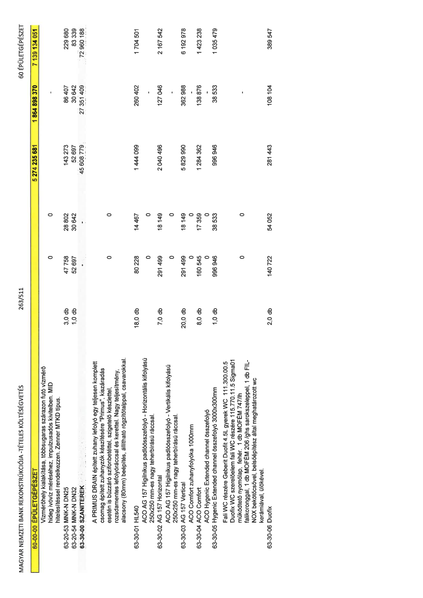

| Tétel | Menny. | Egys. | Anyag e.ár (net HUF) | Díj e.ár (net HUF) | Anyag összesen (net HUF) | Díj összesen (net HUF) | Anyag+Díj összesen (net HUF) |
|---|---|---|---|---|---|---|---|
| 60-00-00 ÉPÜLETGÉPÉSZET | NaN | NaN | 0 | 0 | 5 274 235 681 | 1 864 898 370 | 7 139 134 051 |
| Vízmérőhely kialakítása, többsugaras szárazon futó vízmérő hideg ivóvíz méréséhez, impulzusadós kivitelben. MID hitelesítéssel rendelkezzen. Zenner MTKD típus. | 0 | 0 | 0 | 0 | 0 | 0 | 0 |
| 63-20-53 MNK-N DN25 | 3,0 | db | 47 758 | 28 802 | 143 273 | 86 407 | 229 680 |
| 63-20-54 MNK-N DN32 | 1,0 | db | 52 697 | 30 642 | 52 697 | 30 642 | 83 339 |
| 63-30-00 SZANITEREK | NaN | NaN | 0 | 0 | 45 608 779 | 27 351 409 | 72 960 188 |
| A PRIMUS DRAIN épített zuhany lefolyó egy teljesen komplett csomag épített zuhanyzók készítésére "Primus", kiszáradás esetén is bűzzáró szifonbetéttel, szigetelő készlettel, rozsdamentes lefolyóráccsal és kerettel. Nagy teljesítmény, alacsony (80mm) beépítés, állítható rögzítőtalppal, csavarokkal. | 0 | 0 | 0 | 0 | 0 | 0 | 0 |
| 63-30-01 HL540 | 18,0 | db | 80 228 | 14 467 | 1 444 099 | 260 402 | 1 704 501 |
| ACO AG 157 Higiénikus padlóösszefolyó - Horizontális kifolyású 250x250 mm-es nagy teherbírású ráccsal. | 0 | 0 | 0 | 0 | 0 | 0 | 0 |
| 63-30-02 AG 157 Horizontal | 7,0 | db | 291 499 | 18 149 | 2 040 496 | 127 046 | 2 167 542 |
| ACO AG 157 Higiénikus padlóösszefolyó - Vertikális kifolyású 250x250 mm-es nagy teherbírású ráccsal. | 0 | 0 | 0 | 0 | 0 | 0 | 0 |
| 63-30-03 AG 157 Vertical | 20,0 | db | 291 499 | 18 149 | 5 829 990 | 362 988 | 6 192 978 |
| ACO Comfort zuhanyfolyóka 1000mm | 0 | 0 | 0 | 0 | 0 | 0 | 0 |
| 63-30-04 ACO Comfort | 8,0 | db | 160 545 | 17 359 | 1 284 362 | 138 876 | 1 423 238 |
| ACO Hygenic Extended channel összefolyó 3000x300mm | 0 | 0 | 0 | 0 | 0 | 0 | 0 |
| 63-30-05 Hygenic Extended channel összefolyó 3000x300mm | 1,0 | db | 996 946 | 38 533 | 996 946 | 38 533 | 1 035 479 |
| Fali WC részére Geberit Duofit 4.5L gyerek WC 111.300.00.5 Duofix WC szerelőelem fali WC részére 115.770.11.5 Sigma01 működtető nyomólap, fehér. 1 db MOFÉM 747/lh falikoronggal, 1 db MOFÉM 206 /ghs sarokszeleppel, 1 db FIL-NOX bekötőcsővel, belsőépítész által meghatározott wc kerámiával, ülőkével. | 0 | 0 | 0 | 0 | 0 | 0 | 0 |
| 63-30-06 Duofix | 2,0 | db | 140 722 | 54 052 | 281 443 | 108 104 | 389 547 |
